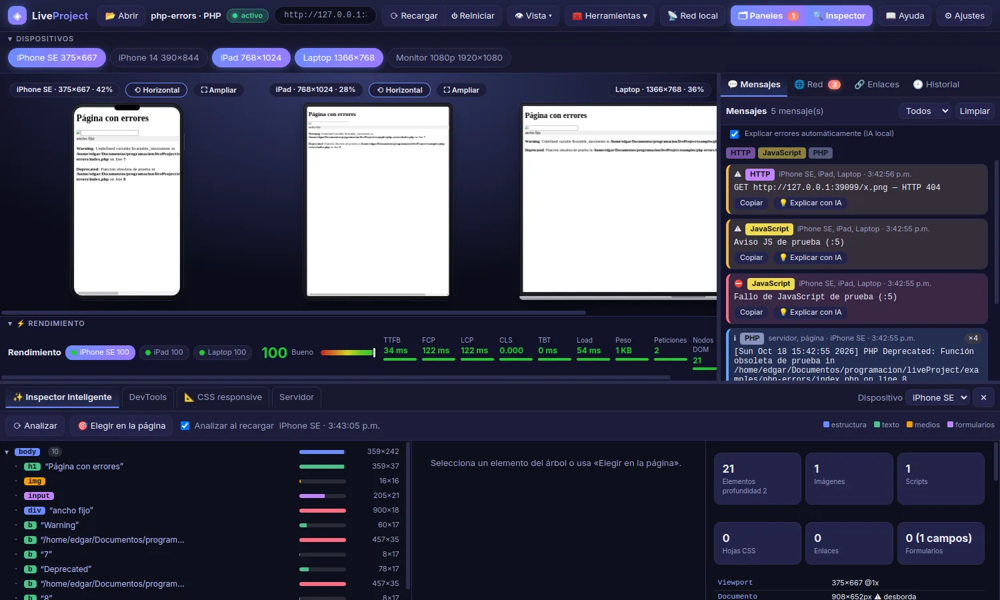
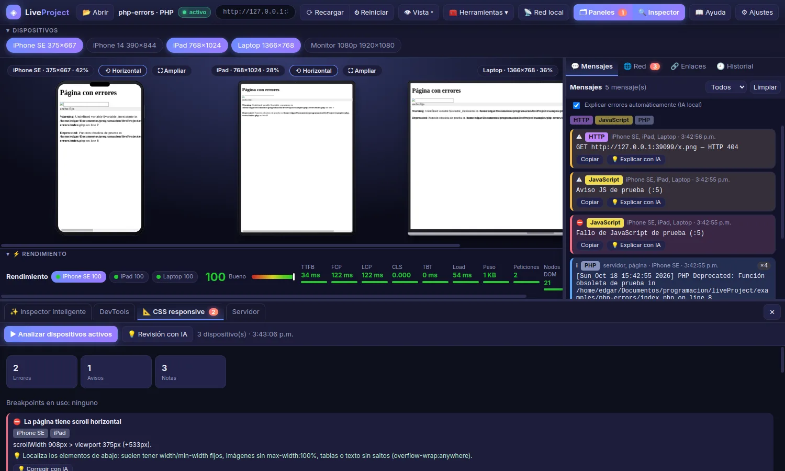

Arranca tu servidor solo
Detecta artisan, manage.py, Flask, npm run dev, Rack, Go o PHP, elige un puerto libre y lo lanza. Con un .liveproject.json puedes personalizar el comando o apuntar a un servidor que ya tengas (XAMPP, Docker…).
Vista previa en vivo · cualquier backend
LiveProject arranca tu proyecto por ti (PHP, Laravel, Django, Flask, Node, Ruby, Go o HTML estático), lo muestra en varios dispositivos a la vez y reúne los errores del servidor, del navegador y de la red en un solo lugar.

La mayoría de herramientas se quedan en el navegador. LiveProject mira también lo que pasa detrás.
Detecta artisan, manage.py, Flask, npm run dev, Rack, Go o PHP, elige un puerto libre y lo lanza. Con un .liveproject.json puedes personalizar el comando o apuntar a un servidor que ya tengas (XAMPP, Docker…).
Teléfono, tableta, portátil y monitor lado a lado, con presets actuales y tamaños propios. El scroll y los clics se sincronizan entre vistas, y puedes rotar o ampliar cada una.
Lee la salida de tu servidor y la propia página: PHP, Python, Node, Ruby, Go, Java, C#, SQL, HTTP y JavaScript, con etiqueta de lenguaje, color por gravedad y trazas agrupadas.
Un clic y la IA que elijas propone la causa probable y cómo arreglarlo. Con IA local puede hacerlo sola para cada error nuevo, sin coste.
Un proxy en tu red local te da una URL y un código QR. El móvil se recarga al guardar y sus errores de JavaScript llegan al mismo panel de mensajes.
Inspector con árbol del DOM y desbordes, linter de CSS responsive con el viewport real de cada dispositivo, comprobador de enlaces rotos y barra de rendimiento con Core Web Vitals.
Todas las peticiones de cada vista, con filtros y fallos destacados, y las DevTools de Chromium completas cuando necesitas ir más a fondo.
Cada sesión se guarda sola con sus errores. Exporta un informe en HTML y Markdown con mensajes, red, enlaces, CSS y rendimiento para compartirlo con el equipo.
Un fallo de PHP, un Traceback de Python y un console.error del navegador acaban en la misma lista, con el dispositivo donde ocurrió. El mismo error visto desde varias vistas se cuenta una vez.

Datos de la documentación pública de cada herramienta, consultada en octubre de 2026. Marcamos solo lo que figura en ella.
| Función | LiveProject | Responsively App | Polypane | BrowserSync | Chrome DevTools |
|---|---|---|---|---|---|
| Varias vistas de dispositivo a la vez | Sí | Sí | Sí | No | No |
| Interacción sincronizada entre vistas | Sí | Sí | Sí | Sí | No |
| Recarga al guardar | Sí | Sí | Sí | Sí | No |
| Arranca el servidor de tu proyecto | Sí | No | No | Solo estático | No |
| Errores del servidor (PHP, Python…) en un panel | Sí | No | No | No | No |
| Explicación de errores con IA | Sí, local o en la nube | No | No | No | Asistente de Chrome |
| Móvil real por red local | Sí, con QR | No | No | Sí | No |
| Comprobador de enlaces rotos | Sí | No | No | No | No |
| Informe exportable (HTML y Markdown) | Sí | No | No | No | No |
| Precio | Gratis | Gratis y open source | Suscripción | Gratis | Incluido en Chrome |
«No» significa que no aparece en la documentación consultada. Si encuentras un dato desactualizado, avísanos.
Es más amplia en accesibilidad: declara más de 80 pruebas y más de 25 herramientas de depuración. Si tu foco es auditoría de accesibilidad profunda, es una gran opción.
Es open source (AGPL-3.0) y tiene instaladores para macOS, Windows y Linux. LiveProject, por ahora, se empaqueta solo para Linux.
Sincroniza navegadores reales y se integra en cualquier flujo de build de Node, sin una aplicación de escritorio.
Ya está instalado y es la referencia. LiveProject incluye las DevTools de Chromium para no renunciar a ellas.
La IA es opcional y la eliges tú. Con Ollama o LM Studio, el código y los errores no salen de tu equipo y no pagas por uso. Si prefieres calidad máxima, conecta la API de Anthropic, OpenAI o Gemini, o usa la CLI de tu suscripción (Claude Code, Codex o Gemini CLI).
Local
Ollama · LM Studio · servidor compatible con OpenAI
API
Anthropic · OpenAI · Google Gemini
Suscripción
Claude Code · Codex CLI · Gemini CLI
Necesitas Node.js y el runtime de tu proyecto (por ejemplo PHP o Python).
git clone https://github.com/GMR027/liveproject.git
cd liveproject/app && npm installnpm start -- /ruta/al/proyectoEdita cualquier archivo. Todas las vistas se recargan, y los errores aparecen en el panel de mensajes.
No. LiveProject es gratuito. Solo pagarías si decides conectar una IA de pago por uso (API de Anthropic, OpenAI o Gemini); con IA local no hay ningún coste.
Detecta Laravel, Django, Flask, proyectos Node con dev o start, Rack, Go y PHP. Para cualquier otro, define el comando en .liveproject.json.
Sí. Indica su url en .liveproject.json y LiveProject se limita a mostrarlo, sin lanzar ningún proceso.
No. Todo lo demás funciona sin ella. Si la activas, tú decides si es local o en la nube.
Hoy se empaqueta para Linux (AppImage y .deb). Al estar hecho con Electron, ejecutarlo desde el código fuente en otros sistemas es posible, pero no está probado.
Capturas, sesiones e informes van a la carpeta .liveproject/ dentro del proyecto. Conviene añadirla a tu .gitignore.